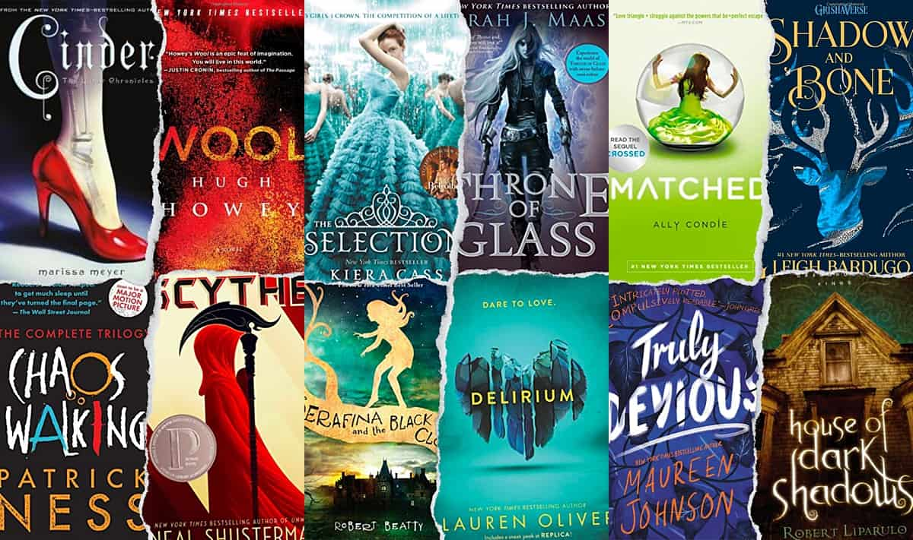

Some Book Recommendations For A Bored Highschooler

As a high school student, the most popular books on our reading list cover a wide spectrum of genres and themes that resonate with our diverse interests. Classics like "To Kill a Mockingbird" by Harper Lee and "The Great Gatsby" by F. Scott Fitzgerald transport us to different eras, prompting discussions about justice, identity, and the pursuit of the American Dream. In the realm of contemporary fiction, titles like "The Hunger Games" by Suzanne Collins and "The Fault in Our Stars" by John Green have us gripped with their compelling narratives and relatable characters dealing with love, survival, and profound existential questions. For those of us drawn to non-fiction, "The Diary of Anne Frank" by Anne Frank and "The Immortal Life of Henrietta Lacks" by Rebecca Skloot provide eye-opening insights into history and science. These books not only enhance our school curriculum but also encourage us to think critically and empathize with different perspectives, which is why they remain enduring favorites among high schoolers like us.